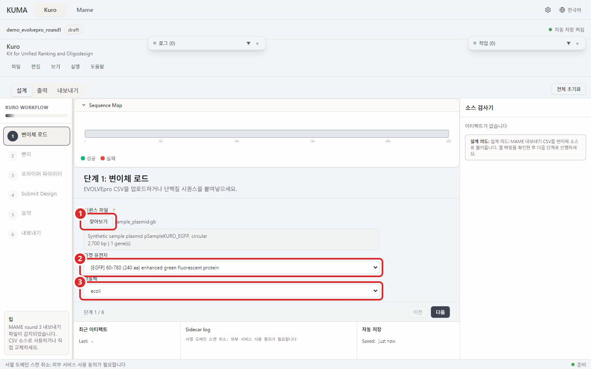

단계 1. 변이체 로드¶

번호 표시: 1 찾아보기; 2 타겟 유전자; 3 생물체
설계의 바탕이 될 서열 파일을 불러오고 프라이머를 설계할 유전자와 코돈 사용 빈도표를 정한다.
하는 일¶
찾아보기를 누르거나 창 안으로 파일을 끌어다 놓아 서열을 불러온다.타겟 유전자에서 설계 대상 CDS 를 고른다. 가장 긴 coding sequence 가 먼저 선택되어 있고 유전자가 하나뿐이면 그대로 두면 된다.생물체에서 코돈 사용 빈도표를 확인한다. 서열 주석에 생물체가 적혀 있으면 자동으로 맞춰진다. 목록 맨 아래균주 추가...로 kuma 에 없는 균주의 표를 설치한다.
입력¶
| 항목 | 받는 형식 |
|---|---|
| 시퀀스 파일 | GenBank .gb, .gbk, .gbff 또는 SnapGene .dna |
| 타겟 유전자 | 불러온 파일에서 찾은 CDS 목록 중 하나 |
| 생물체 | 내장 코돈 사용 빈도표 5종 중 하나, 또는 직접 설치한 표 |
파일을 불러오면 이름 아래에 서열 머리말, 염기 길이, 찾은 유전자 개수가 함께 표시된다.
GenBank는 첫 레코드의 서열과 CDS만 불러온다. 다른 레코드의 유전자를 쓰려면 해당 레코드를 flanking template과 함께 별도 GenBank 파일로 내보낸다. 첫 레코드에 CDS 주석이 없으면 뒤쪽 레코드의 주석으로 대신할 수 없다.
내 균주 쓰기¶
내장 표는 E. coli, B. subtilis, H. sapiens, S. cerevisiae, K. phaffii(GS115, 대부분의 프로토콜이 여전히 P. pastoris 로 적는 그 균주), C. griseus(CHO 계열), C. glutamicum, A. niger, P. putida 아홉이다. M. extorquens AM1 은 이제 내장이 아니다. 코돈 테이블 폴더에 mextorquens_am1.json.txt 로 들어 있고 mextorquens_am1.json 으로 이름만 바꾸면 설치된다. 다른 균주의 표는 한 번 설치해 두면 계속 쓸 수 있다. 들어가는 길이 셋이고 어느 쪽이든 끝에는 그 균주가 이 목록에 나타난다.
균주 추가... 가 여는 대화상자에 표를 만드는 방법이 둘 있다. 게놈에서 계산 은 GenBank 파일(.gb, .gbk, .gbff)이나 CDS FASTA 를 받아 코돈을 직접 센다. 설치하기 전에 몇 개의 coding sequence 를 셌고 어떤 것을 뺐는지 보여 준다. 테이블 파일 가져오기 는 이미 가진 표를 받는다. kuma 테이블(JSON), 3열 CSV, EMBOSS cusp 출력, Kazusa 페이지 붙여넣기 를 읽는다.
세 번째 길에는 대화상자가 필요 없다. .json 파일을 코돈 테이블 폴더에 넣고 설정의 코돈 테이블 에서 새로고침 을 누르면 된다. 그 패널에 폴더 경로가 있고 폴더 안에는 복사해 쓸 TEMPLATE.json.txt 와 형식을 적은 README.txt 가 있다. .json 을 뗀 파일 이름이 kuma 가 기록하는 균주 이름이 되므로 mextorquens_am1.json 은 mextorquens_am1 이 된다.
어느 길이든 설치 전에 표를 검사한다. 검사를 통과하지 못한 파일은 반쯤 읽히는 대신 사유와 함께 목록에 남는다. 내장 표의 이름은 쓸 수 없으므로 고친 사본은 ecoli_lab 같은 다른 이름으로 넣는다.
화면에 나오는 문구¶
| 문구 | 뜻과 할 일 |
|---|---|
파일 선택 없음 (.gb / .dna) |
아직 서열이 없다. 찾아보기 로 파일을 고른다. |
CDS annotation이 필요합니다. GenBank(.gb/.gbk) 또는 SnapGene(.dna) 파일을 사용하세요. |
FASTA 를 골랐다. FASTA 에는 CDS 주석이 없어 설계에 쓸 수 없다. GenBank 또는 SnapGene 파일로 바꾼다. |
먼저 시퀀스 파일을 불러오세요 |
유전자 목록 자리에 나온다. 파일을 먼저 불러온다. |
UniProt BLAST 검색 중… (완료 후 Step 2 사용 가능) |
불러온 서열로 UniProt 검색이 도는 중이다. 끝날 때까지 기다린다. |
Sequence 파일이 필요합니다 |
다음 을 눌렀을 때 뜨는 정보 누락 대화상자의 항목이다. 서열을 불러온 뒤 다시 누른다. |
다음¶
→ 단계 2. 변이